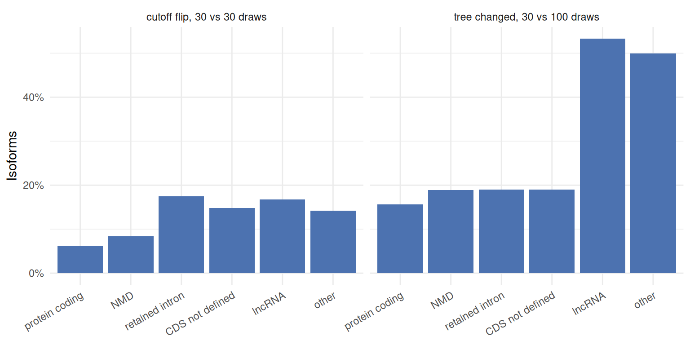
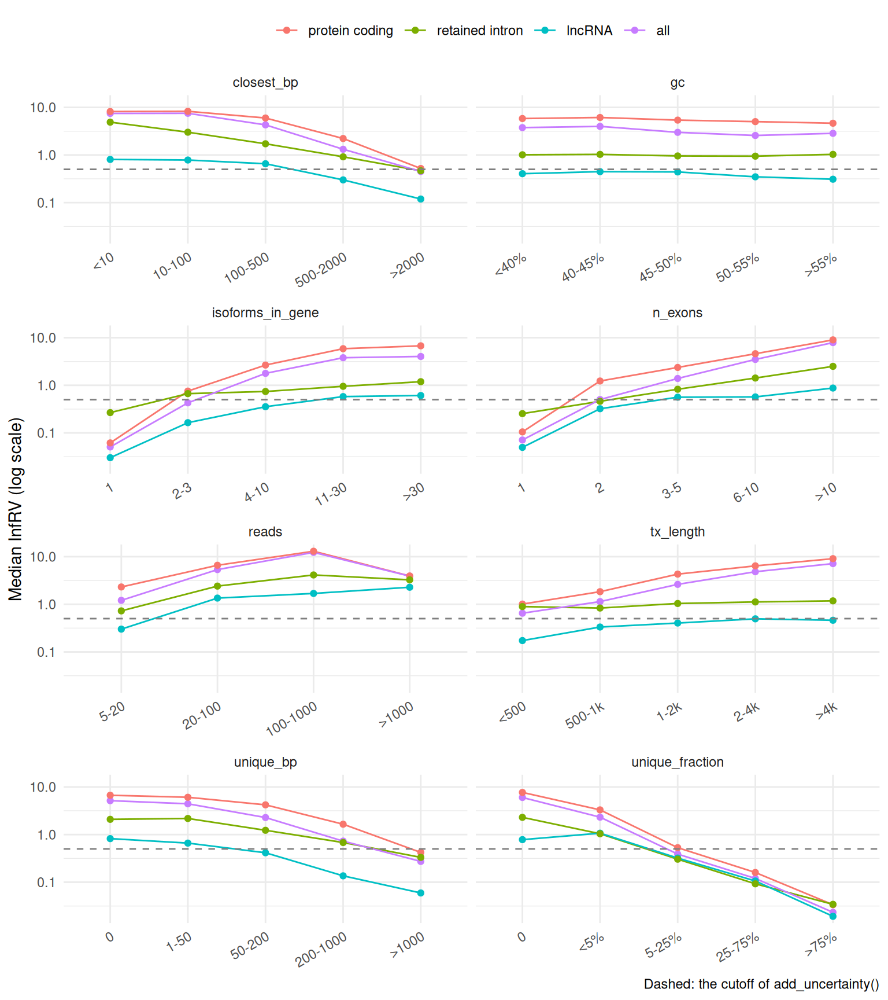
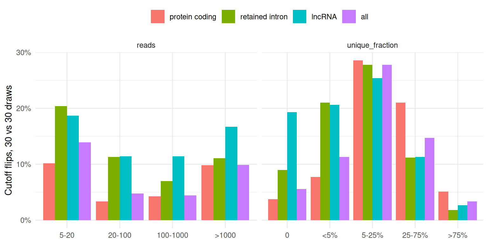
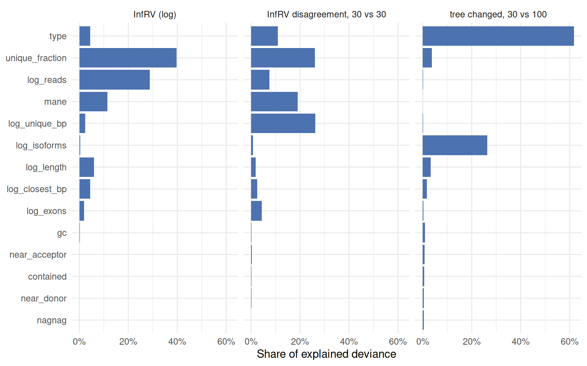

library(isoformic)
library(dplyr)
library(ggplot2)
stability <- function(name) {
read_parquet(fs::path_package("isoformic", "extdata", "knockdown", "stability", paste0(name, ".parquet")))
}
type_labels <- c(
protein_coding = "protein coding",
nonsense_mediated_decay = "NMD",
retained_intron = "retained intron",
protein_coding_CDS_not_defined = "CDS not defined",
lncRNA = "lncRNA",
other = "other",
all = "all"
)What makes an isoform hard to quantify?
October 31, 2026
Source:vignettes/articles/isoformic-quantification-stability.qmd
The uncertainty article turns Salmon’s inferential replicates into an uncertainty for every isoform and a confidence for every call. This article asks the next questions: which isoforms are uncertain, why, and how far the replicates themselves can be trusted. It looks at three things for every isoform:
- how uncertain its abundance is: the inferential relative variance (InfRV) (Zhu et al. 2019) with 100 Gibbs draws;
-
how reliably 30 draws measure that uncertainty: whether two independent sets of 30 draws put the isoform on different sides of the 0.5 cutoff that
add_uncertainty()uses to call it uncertain (a cutoff flip), and how much the two estimates differ; - how stable its TreeTerminus tree is (Singh et al. 2023): whether the transcripts of its tree change between trees built from 30 and from 100 draws.
and relates them to the transcript type and to molecular features of the isoform and its gene.
The data
Three samples of the prostate ESRP2 knockdown of the uncertainty article (two controls and one knockdown; 12 million read pairs each) were quantified with Salmon 2.8.0 against GENCODE v49, with 100 Gibbs draws, and once more with 30. Isoforms with at least 5 estimated reads in a sample are kept, and the measures are averaged over the samples where the isoform is expressed. The features come from the annotation, the transcript sequences and the equivalence classes:
| Feature | Meaning |
|---|---|
reads |
estimated reads of the isoform |
tx_length, n_exons
|
length and exons of the isoform |
isoforms_in_gene |
annotated isoforms of its gene |
gc |
GC content of the transcript sequence |
mane, tsl
|
MANE Select tag; transcript support level |
unique_bp |
exonic bases no other isoform of the gene covers |
closest_bp |
exonic bases that differ from the most similar sibling (both directions) |
contained |
all its exonic bases are inside another isoform’s |
nagnag |
an acceptor site three bases from an acceptor of another isoform (NAGNAG) |
near_acceptor, near_donor
|
a splice site 1 to 30 bases from another isoform’s |
unique_fraction |
share of its fragments compatible with it alone (equivalence classes) |
data-raw/knockdown/isoform_features.R computes everything; the tables used below ship with the package.
By transcript type
by_type <- stability("by_type")
#> duckdb keeps downloaded extensions and secrets in a temporary directory:
#> ℹ /tmp/RtmpkiuR24/duckdb
#> This is removed when the R session ends.
#> • Extensions are re-downloaded each session.
#> • Secrets are lost.
#> ℹ Run duckdb(shared_home = TRUE) (or create ~/.duckdb) to keep them (suitable for most users).
#> ℹ Run duckdb(shared_home = FALSE) to accept the temporary directory (and silence this message).
#> ℹ See ?duckdb_storage for details and alternatives.
by_type |>
select(type, isoforms, median_reads, median_isoforms_in_gene, median_unique_fraction, median_inf_rv, cutoff_flip, tree_changed)
#> # A tibble: 6 × 8
#> type isoforms median_reads median_isoforms_in_g…¹ median_unique_fraction
#> <chr> <int> <dbl> <dbl> <dbl>
#> 1 protein_c… 59427 35.4 22 0
#> 2 nonsense_… 5604 16 24 0.00108
#> 3 retained_… 8975 12.2 26 0.00748
#> 4 protein_c… 4203 11.8 19 0.00845
#> 5 lncRNA 8652 10.7 17 0.0119
#> 6 other 569 10 1 0.031
#> # ℹ abbreviated name: ¹median_isoforms_in_gene
#> # ℹ 3 more variables: median_inf_rv <dbl>, cutoff_flip <dbl>,
#> # tree_changed <dbl>Three different pictures emerge.
- Protein-coding isoforms are the most uncertain and the most reliably measured. Their median InfRV is the highest (5.28): they belong to genes with many isoforms (median 22) that share their exons, and half of them have no fragment of their own. But their InfRV is far above the cutoff, so 30 draws rarely put one on the other side (6.2% flip).
- Retained-intron, CDS-not-defined and lncRNA isoforms flip most (17.5%, 14.8% and 16.8%): they have fewer reads and their InfRV sits near the cutoff, where a noisier estimate decides the call.
- lncRNA trees are the least stable: 53.3% of lncRNA isoforms are in a tree whose transcripts change between 30 and 100 draws, against 15.6% of protein-coding ones.
by_type |>
tidyr::pivot_longer(c("cutoff_flip", "tree_changed"), names_to = "measure", values_to = "share") |>
mutate(
type = factor(type_labels[type], levels = type_labels),
measure = c(cutoff_flip = "cutoff flip, 30 vs 30 draws", tree_changed = "tree changed, 30 vs 100 draws")[measure]
) |>
ggplot(aes(x = type, y = share)) +
geom_col(fill = "#4C72B0") +
facet_wrap(vars(measure)) +
scale_y_continuous(labels = scales::percent) +
labs(x = NULL, y = "Isoforms") +
theme_minimal() +
theme(axis.text.x = element_text(angle = 30, hjust = 1))
The tree changes matter for the isoforms that a cut of the trees would group, the uncertain ones; for lncRNAs they are as frequent among those:
stability("tree_uncertainty") |>
filter(type %in% c("protein_coding", "retained_intron", "lncRNA"))
#> duckdb keeps downloaded extensions and secrets in a temporary directory:
#> ℹ /tmp/RtmpkiuR24/duckdb
#> This is removed when the R session ends.
#> • Extensions are re-downloaded each session.
#> • Secrets are lost.
#> ℹ Run duckdb(shared_home = TRUE) (or create ~/.duckdb) to keep them (suitable for most users).
#> ℹ Run duckdb(shared_home = FALSE) to accept the temporary directory (and silence this message).
#> ℹ See ?duckdb_storage for details and alternatives.
#> # A tibble: 6 × 5
#> type uncertain isoforms cutoff_flip tree_changed
#> <chr> <lgl> <int> <dbl> <dbl>
#> 1 protein_coding FALSE 5598 0.243 0.216
#> 2 protein_coding TRUE 53829 0.0437 0.15
#> 3 retained_intron FALSE 2709 0.243 0.218
#> 4 retained_intron TRUE 6266 0.146 0.179
#> 5 lncRNA FALSE 4892 0.151 0.549
#> 6 lncRNA TRUE 3760 0.189 0.518What the features say
The median InfRV across the levels of each feature, for all isoforms and within the three largest types:
bins <- stability("feature_bins")
#> duckdb keeps downloaded extensions and secrets in a temporary directory:
#> ℹ /tmp/RtmpkiuR24/duckdb
#> This is removed when the R session ends.
#> • Extensions are re-downloaded each session.
#> • Secrets are lost.
#> ℹ Run duckdb(shared_home = TRUE) (or create ~/.duckdb) to keep them (suitable for most users).
#> ℹ Run duckdb(shared_home = FALSE) to accept the temporary directory (and silence this message).
#> ℹ See ?duckdb_storage for details and alternatives.
bins |>
filter(
feature %in% c("reads", "unique_fraction", "isoforms_in_gene", "tx_length", "closest_bp", "unique_bp", "n_exons", "gc"),
type %in% c("all", "protein_coding", "retained_intron", "lncRNA")
) |>
mutate(
type = factor(type_labels[type], levels = type_labels),
level = reorder(level, level_order)
) |>
ggplot(aes(x = level, y = median_inf_rv, colour = type, group = type)) +
geom_line() +
geom_point() +
geom_hline(yintercept = 0.5, linetype = "dashed", colour = "grey50") +
scale_y_log10() +
facet_wrap(vars(feature), scales = "free_x", ncol = 2) +
labs(x = NULL, y = "Median InfRV (log scale)", colour = NULL, caption = "Dashed: the cutoff of add_uncertainty()") +
theme_minimal() +
theme(axis.text.x = element_text(angle = 30, hjust = 1), legend.position = "top")
- Fragments of its own decide whether an isoform is determined. The median InfRV falls from about 6 for isoforms without a unique fragment to 0.02 for those with most fragments unique, within every type.
- Sequence identity to siblings works the same way: isoforms that differ from their closest sibling by few bases, or that have few exonic bases of their own, are the most uncertain.
- More isoforms in the gene, more uncertainty: from 0.05 for genes with one isoform to about 4 for genes with more than 30.
- Uncertainty is not a problem of low counts. The InfRV rises with the number of reads up to a thousand reads: an ambiguous isoform stays ambiguous however deep it is sequenced, plausibly because the variance that assignment adds grows with the reads that have to be assigned. Length works the same way for protein-coding isoforms, which share more exons as they grow.
- GC content hardly matters once the rest is known.
The cutoff flips follow a different pattern: they are rare where the InfRV is far from the cutoff in either direction and frequent near it.
bins |>
filter(feature %in% c("unique_fraction", "reads"), type %in% c("all", "protein_coding", "retained_intron", "lncRNA")) |>
mutate(type = factor(type_labels[type], levels = type_labels), level = reorder(level, level_order)) |>
ggplot(aes(x = level, y = cutoff_flip, fill = type)) +
geom_col(position = "dodge") +
facet_wrap(vars(feature), scales = "free_x") +
scale_y_continuous(labels = scales::percent) +
labs(x = NULL, y = "Cutoff flips, 30 vs 30 draws", fill = NULL) +
theme_minimal() +
theme(legend.position = "top")
Isoforms with some but few unique fragments (5% to 25%) flip most, and low-count isoforms flip more than well-covered ones: these are the isoforms whose call depends on the replicates, and for which more draws help.
Splice sites
NAGNAG acceptors, where two isoforms differ by three bases at an acceptor, are a classical hard case for read assignment.
bins |>
filter(feature %in% c("nagnag", "near_acceptor", "near_donor", "contained", "mane"), type %in% c("all", "protein_coding")) |>
select(feature, type, level, isoforms, median_inf_rv, cutoff_flip, tree_changed)
#> # A tibble: 20 × 7
#> feature type level isoforms median_inf_rv cutoff_flip tree_changed
#> <chr> <chr> <chr> <int> <dbl> <dbl> <dbl>
#> 1 contained all no 59897 2.28 0.105 0.208
#> 2 contained all yes 27533 5.56 0.058 0.175
#> 3 contained protein_… no 37319 4.41 0.0746 0.159
#> 4 contained protein_… yes 22108 6.83 0.0422 0.152
#> 5 nagnag all no 67152 2.46 0.101 0.209
#> 6 nagnag all yes 20278 6.41 0.0545 0.161
#> 7 nagnag protein_… no 42658 4.42 0.0714 0.161
#> 8 nagnag protein_… yes 16769 7.83 0.0399 0.145
#> 9 near_acceptor all no 34737 1.35 0.125 0.228
#> 10 near_acceptor all yes 52693 4.96 0.068 0.179
#> 11 near_acceptor protein_… no 18873 2.87 0.0941 0.171
#> 12 near_acceptor protein_… yes 40554 6.6 0.0478 0.15
#> 13 near_donor all no 52293 2.07 0.11 0.203
#> 14 near_donor all yes 35137 5.26 0.0618 0.19
#> 15 near_donor protein_… no 32421 4.02 0.0794 0.15
#> 16 near_donor protein_… yes 27006 6.88 0.0423 0.163
#> 17 mane all no 76688 3.13 0.0891 0.205
#> 18 mane all yes 10742 3.2 0.101 0.149
#> 19 mane protein_… no 48693 5.73 0.0541 0.158
#> 20 mane protein_… yes 10734 3.21 0.101 0.149Isoforms with a NAGNAG or a nearby alternative acceptor or donor are more uncertain, but the model below attributes almost none of that to the splice sites themselves once the unique fragments are known: a three-base difference leaves the isoform with very few fragments of its own, and that is what the replicates register. MANE Select isoforms are less uncertain than the other protein-coding isoforms of their genes, and closer to the cutoff, so they flip more often.
Separating the factors
The features are correlated (long isoforms have more exons; genes with many isoforms have isoforms with few unique bases), so their individual effects come from models that include them all, with the continuous features standardised. The share of the explained deviance of each feature:
importance <- stability("importance")
#> duckdb keeps downloaded extensions and secrets in a temporary directory:
#> ℹ /tmp/RtmpkiuR24/duckdb
#> This is removed when the R session ends.
#> • Extensions are re-downloaded each session.
#> • Secrets are lost.
#> ℹ Run duckdb(shared_home = TRUE) (or create ~/.duckdb) to keep them (suitable for most users).
#> ℹ Run duckdb(shared_home = FALSE) to accept the temporary directory (and silence this message).
#> ℹ See ?duckdb_storage for details and alternatives.
importance |>
mutate(
outcome = c(
log_inf_rv = "InfRV (log)",
log_rv_disagreement = "InfRV disagreement, 30 vs 30",
tree_changed = "tree changed, 30 vs 100"
)[outcome],
term = reorder(term, share)
) |>
ggplot(aes(x = share, y = term)) +
geom_col(fill = "#4C72B0") +
facet_wrap(vars(outcome), nrow = 1) +
scale_x_continuous(labels = scales::percent) +
labs(x = "Share of explained deviance", y = NULL) +
theme_minimal()
stability("model_fit")
#> duckdb keeps downloaded extensions and secrets in a temporary directory:
#> ℹ /tmp/RtmpkiuR24/duckdb
#> This is removed when the R session ends.
#> • Extensions are re-downloaded each session.
#> • Secrets are lost.
#> ℹ Run duckdb(shared_home = TRUE) (or create ~/.duckdb) to keep them (suitable for most users).
#> ℹ Run duckdb(shared_home = FALSE) to accept the temporary directory (and silence this message).
#> ℹ See ?duckdb_storage for details and alternatives.
#> # A tibble: 2 × 3
#> outcome r_squared isoforms
#> <chr> <dbl> <int>
#> 1 log_inf_rv 0.629 85236
#> 2 log_rv_disagreement 0.0788 85236- How uncertain an isoform is is well explained (R² 0.629): the unique fragments, the reads, the MANE tag, the length and the distance to the closest sibling carry most of it.
- How much two sets of 30 draws disagree is mostly not explained by any feature (R² 0.0788): it is sampling noise of the draws, which only more draws reduce. The disagreement on the log scale is largest for the best-determined isoforms, whose InfRV is close to zero; on the decisions that matter (the cutoff) the flips above are the better summary.
- Whether the tree changes depends mostly on the transcript type and on the number of isoforms of the gene: lncRNA loci and genes with many isoforms have the least stable trees.
The direction of each effect:
stability("model_terms") |>
filter(!grepl("^type|Intercept", term)) |>
select(outcome, term, estimate, p_value) |>
tidyr::pivot_wider(names_from = outcome, values_from = c(estimate, p_value))
#> duckdb keeps downloaded extensions and secrets in a temporary directory:
#> ℹ /tmp/RtmpkiuR24/duckdb
#> This is removed when the R session ends.
#> • Extensions are re-downloaded each session.
#> • Secrets are lost.
#> ℹ Run duckdb(shared_home = TRUE) (or create ~/.duckdb) to keep them (suitable for most users).
#> ℹ Run duckdb(shared_home = FALSE) to accept the temporary directory (and silence this message).
#> ℹ See ?duckdb_storage for details and alternatives.
#> # A tibble: 13 × 7
#> term estimate_log_inf_rv estimate_log_rv_disa…¹ estimate_tree_changed
#> <chr> <dbl> <dbl> <dbl>
#> 1 log_reads 0.248 0.022 0.0229
#> 2 log_length 0.131 -0.0129 -0.132
#> 3 log_exons 0.0821 -0.0211 -0.0376
#> 4 log_isoforms -0.0286 0.00737 0.328
#> 5 gc -0.0161 0.00308 -0.0548
#> 6 log_unique_… -0.0913 0.0528 0.0251
#> 7 log_closest… -0.114 0.015 0.103
#> 8 unique_frac… -0.29 0.0409 0.126
#> 9 containedTR… -0.00766 0.0058 -0.113
#> 10 nagnagTRUE 0.0115 -0.0023 -0.0917
#> 11 near_accept… 0.0301 -0.00907 -0.114
#> 12 near_donorT… 0.0312 -0.00639 0.0718
#> 13 maneTRUE -0.465 0.105 0.0226
#> # ℹ abbreviated name: ¹estimate_log_rv_disagreement
#> # ℹ 3 more variables: p_value_log_inf_rv <dbl>,
#> # p_value_log_rv_disagreement <dbl>, p_value_tree_changed <dbl>How to read the uncertainty of an isoform
-
A high InfRV means an isoform shares its reads, not that it has few. Look at
unique_fractionintx_uncertainty(): an isoform with almost no fragment of its own will stay uncertain at any depth, and the honest unit for it is a group (collapse_groups, Terminus or TreeTerminus). -
Calls near the cutoff are the fragile ones. Isoforms with a few unique fragments, few reads, retained introns, lncRNAs and transcripts without a defined CDS are where 30 draws can tip the call; for those, 100 draws make the classes more stable (
salmon_quant(num_gibbs = 100)). - TreeTerminus on lncRNA-rich questions needs more draws. About half of the lncRNA trees change between 30 and 100 draws, also for uncertain isoforms.
-
Splice-site structure acts through the reads. NAGNAG and nearby alternative splice sites make isoforms hard to separate because they leave them without unique fragments;
unique_fractionalready measures that, so there is no need to correct for it separately. - The MANE isoform is the easiest isoform of a coding gene to quantify, which also makes it the most common reference when the other isoforms are uncertain.
Cautions
The measures come from three samples of one experiment, quantified with one tool (Salmon 2.8.0) on 12 million read pairs; deeper libraries may move isoforms relative to the cutoff (not tested here), and other quantifiers distribute ambiguous reads differently. The cutoff flips compare two halves of one Salmon run, a clean comparison of 30 draws with 30 draws; the tree changes compare two separate Salmon runs, so they mix the effect of the number of draws with the randomness of an independent run. The features describe the annotation; isoforms absent from it, and reads from them, are outside this picture.
Session information
sessionInfo()
#> R version 4.6.2 (2026-10-29)
#> Platform: x86_64-pc-linux-gnu
#> Running under: Ubuntu 24.04.5 LTS
#>
#> Matrix products: default
#> BLAS: /usr/lib/x86_64-linux-gnu/openblas-pthread/libblas.so.3
#> LAPACK: /usr/lib/x86_64-linux-gnu/openblas-pthread/libopenblasp-r0.3.26.so; LAPACK version 3.12.0
#>
#> locale:
#> [1] LC_CTYPE=C.UTF-8 LC_NUMERIC=C LC_TIME=C.UTF-8
#> [4] LC_COLLATE=C.UTF-8 LC_MONETARY=C.UTF-8 LC_MESSAGES=C.UTF-8
#> [7] LC_PAPER=C.UTF-8 LC_NAME=C LC_ADDRESS=C
#> [10] LC_TELEPHONE=C LC_MEASUREMENT=C.UTF-8 LC_IDENTIFICATION=C
#>
#> time zone: UTC
#> tzcode source: system (glibc)
#>
#> attached base packages:
#> [1] stats graphics grDevices utils datasets methods base
#>
#> other attached packages:
#> [1] ggplot2_4.0.3 dplyr_1.2.1 isoformic_0.1.2.9022
#>
#> loaded via a namespace (and not attached):
#> [1] gtable_0.3.6 jsonlite_2.0.0 compiler_4.6.2 tidyselect_1.2.1
#> [5] tidyr_1.3.2 scales_1.4.0 yaml_2.3.12 fastmap_1.2.0
#> [9] R6_2.6.1 labeling_0.4.3 generics_0.1.4 knitr_1.52
#> [13] tibble_3.3.1 DBI_1.3.0 pillar_1.11.1 RColorBrewer_1.1-3
#> [17] rlang_1.3.0 utf8_1.2.6 xfun_0.62 fs_2.1.0
#> [21] S7_0.2.2 otel_0.2.0 cli_3.6.6 withr_3.0.3
#> [25] magrittr_2.0.5 digest_0.6.39 grid_4.6.2 lifecycle_1.0.5
#> [29] vctrs_0.7.3 evaluate_1.0.5 glue_1.8.1 farver_2.1.2
#> [33] duckdb_2.0.0 purrr_1.2.2 rmarkdown_2.32 tools_4.6.2
#> [37] pkgconfig_2.0.3 htmltools_0.5.9References
Singh, Noor Pratap, Michael I Love, and Rob Patro. 2023. “TreeTerminus – Creating Transcript Trees Using Inferential Replicate Counts.” iScience 26 (6): 106961. https://doi.org/10.1016/j.isci.2023.106961.
Zhu, A, A Srivastava, JG Ibrahim, R Patro, and MI Love. 2019. “Nonparametric expression analysis using inferential replicate counts.” Nucleic Acids Research 47: e105. https://doi.org/10.1093/nar/gkz622.